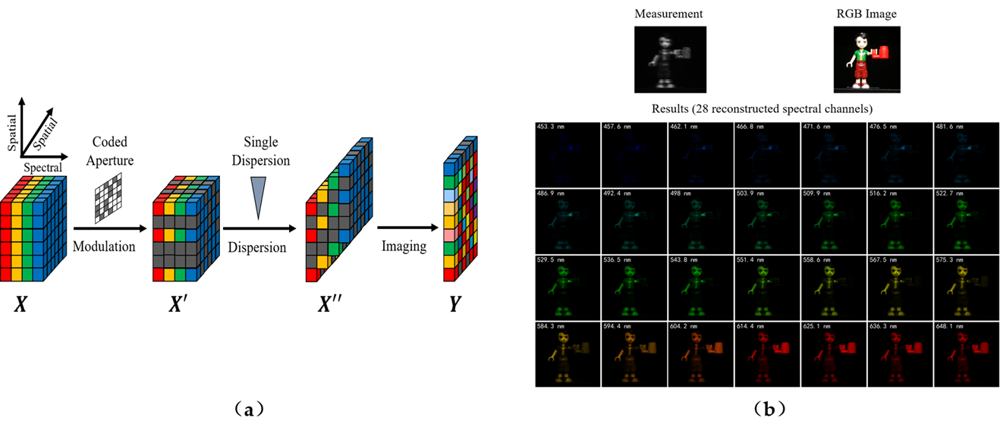
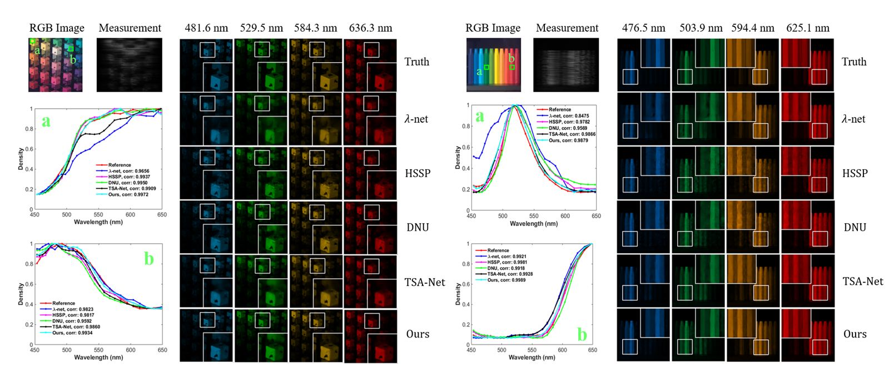
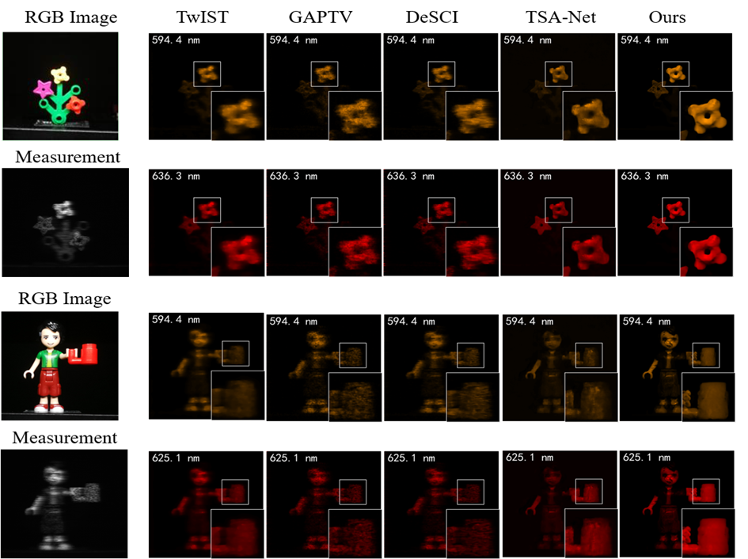

Deep Gaussian Scale Mixture Prior for Spectral Compressive Imaging
Tao Huang1 Weisheng Dong1* Xin Yuan2* Jinjian Wu1 Guangming Shi1
1School of Artificial Intelligence, Xidian University 2Bell Labs

Figure 1. (a) The imaging schematic of CASSI system. (b) A single shot measurement captured by [7] and 28 reconstructed
spectral channels using our proposed method.
Abstract
In coded aperture snapshot spectral imaging (CASSI) system, the real-world hyperspectral image (HSI) can be reconstructed from the captured compressive image in a snapshot. Model-based HSI reconstruction methods employed hand-crafted priors to solve the reconstruction problem, but most of which achieved limited success due to the poor representation capability of these hand-crafted priors. Deep learning based methods learning the mappings between the compressive images and the HSIs directly achieved much better results. Yet, it is nontrivial to design a powerful deep network heuristically for achieving satisfied results. In this paper, we propose a novel HSI reconstruction method based on the Maximum a Posterior (MAP) estimation framework using learned Gaussian Scale Mixture (GSM) prior. Different from existing GSM models using hand-crafted scale priors (e.g., the Jeffrey’s prior), we propose to learn the scale prior through a deep convolutional neural network (DCNN). Furthermore, we also propose to estimate the local means of the GSM models by the DCNN. All the parameters of the MAP estimation algorithm and the DCNN parameters are jointly optimized through end-to-end training. Extensive experimental results on both synthetic and real datasets demonstrate that the proposed method outperforms existing state-of-the-art methods.
 |
|
CVPR 2021 Supplementary Material
Citation
Tao Huang, Weisheng Dong, Xin Yuan, Jinjian Wu, Guangming Shi, "Deep Gaussian Scale Mixture Prior for Spectral Compressive Imaging", in IEEE Conference on Computer Vision and Pattern Recognition (CVPR), 2021.
Bibtex
@inproceedings{huang2021deep,
author = {Huang, Tao and Dong, WeiSheng and Yuan, Xin and Wu, Jinjian and Shi, Guangming},
title = { Deep Gaussian Scale Mixture Prior for Spectral Compressive Imaging },
booktitle = {IEEE Conference on Computer Vision and Pattern Recognition},
year = {2021}
}
Download
Code Training data (CAVE) Training data (KAIST) Testing data (simulation data and real data)
Results
Table 1. The PSNR in dB (left entry in each cell) and SSIM (right entry in each cell) results of the test methods on 10 scenes.
|
Method |
TwIST [1] |
GAP-TV [2] |
DeSCI [3] |
λ-net [4] |
HSSP [5] |
DNU [6] |
TSA-Net [7] |
Ours |
|
Scene1 |
25.16, 0.6996 |
26.82, 0.7544 |
27.13, 0.7479 |
30.10, 0.8492 |
31.48, 0.8577 |
31.72, 0.8634 |
32.03, 0.8920 |
33.26, 0.9152 |
|
Scene2 |
23.02, 0.6038 |
22.89, 0.6103 |
23.04, 0.6198 |
28.49, 0.8054 |
31.09, 0.8422 |
31.13, 0.8464 |
31.00, 0.8583 |
32.09, 0.8977 |
|
Scene3 |
21.40, 0.7105 |
26.31, 0.8024 |
26.62, 0.8182 |
27.73, 0.8696 |
28.96, 0.8231 |
29.99, 0.8447 |
32.25, 0.9145 |
33.06, 0.9251 |
|
Scene4 |
30.19, 0.8508 |
30.65, 0.8522 |
34.96, 0.8966 |
37.01, 0.9338 |
34.56, 0.9018 |
35.34, 0.9084 |
39.19, 0.9528 |
40.54, 0.9636 |
|
Scene5 |
21.41, 0.6351 |
23.64,0.7033 |
23.94, 0.7057 |
26.19, 0.8166 |
28.53, 0.8084 |
29.03, 0.8326 |
29.39, 0.8835 |
28.86, 0.8820 |
|
Scene6 |
20.95, 0.6435 |
21.85, 0.6625 |
22.38, 0.6834 |
28.64, 0.8527 |
30.83, 0.8766 |
30.87, 0.8868 |
31.44, 0.9076 |
33.08, 0.9372 |
|
Scene7 |
22.20, 0.6427 |
23.76, 0.6881 |
24.45, 0.7433 |
26.47, 0.8062 |
28.71, 0.8236 |
28.99, 0.8386 |
30.32, 0.8782 |
30.74, 0.8860 |
|
Scene8 |
21.82, 0.6495 |
21.98, 0.6547 |
22.03, 0.6725 |
26.09, 0.8307 |
30.09, 0.8811 |
30.13, 0.8845 |
29.35, 0.8884 |
31.55, 0.9234 |
|
Scene9 |
22.42, 0.6902 |
22.63, 0.6815 |
24.56, 0.7320 |
27.50, 0.8258 |
30.43, 0.8676 |
31.03, 0.8760 |
30.01, 0.8901 |
31.66, 0.9110 |
|
Scene10 |
22.67, 0.5687 |
23.10, 0.5839 |
23.59, 0.5874 |
27.13, 0.8163 |
28.78, 0.8416 |
29.14, 0.8494 |
29.59, 0.8740 |
31.44, 0.9247 |
|
Average |
23.12, 0.6694 |
24.36, 0.6993 |
25.27, 0.7207 |
28.53, 0.8406 |
30.35, 0.8524 |
30.74, 0.8631 |
31.46, 0.8939 |
32.63, 0.9166 |
 |
Figure 2. Reconstructed images of Scene 2 (left) and Scene 9 (right) with 4 out of 28 spectral channels by the five deep learning-based
methods. Two regions in each scene are selected for analysing the spectra of the reconstructed results.

Figure 3. Reconstructed images of two real scenes (Scene 1 and Scene 3) with 2 out of 28 spectral channels by the competing methods.
References
[1] José MBioucas-Dias and Mário ATFigueiredo. Anew twist: Two-step iterative shrinkage/thresholding algorithms for image restoration. IEEE Transactions on Image processing, 16(12):2992�C3004, 2007.
[2] Xin Yuan. Generalized alternating projection based total variation minimization for compressive sensing. In 2016 IEEE International Conference on Image Processing (ICIP), pages 2539�C2543. IEEE, 2016.
[3] Yang Liu, Xin Yuan, Jinli Suo, David J Brady, and Qionghai Dai. Rank minimization for snapshot compressive imaging. IEEE transactions on pattern analysis and machine intelligence, 41(12):2990�C3006, 2018.
[4] Xin Miao, Xin Yuan, Yunchen Pu, and Vassilis Athitsos. lambda-net: Reconstruct hyperspectral images from a snapshot measurement. In 2019 IEEE/CVF International Conference on Computer Vision (ICCV), pages 4058�C4068. IEEE, 2019.
[5] Lizhi Wang, Chen Sun, Ying Fu, Min H Kim, and Hua Huang. Hyperspectral image reconstruction using a deep spatial-spectralprior. In Proceedings of the IEEE Conference on Computer Vision and Pattern Recognition, pages 8032�C8041, 2019.
[6] Lizhi Wang, Chen Sun, Maoqing Zhang, Ying Fu, and Hua Huang. Dnu: Deep non-local unrolling for computational spectral imaging. In Proceedings of the IEEE/CVF Conference on Computer Vision and Pattern Recognition, pages 1661�C1671, 2020.
[7] Ziyi Meng, Jiawei Ma, and Xin Yuan. End-to-end low cost compressive spectral imaging with spatial-spectral self-attention. In European Conference on Computer Vision, pages 187�C204. Springer, 2020.
Contact
Tao Huang, Email: thuang_666@stu.xidian.edu.cn
Weisheng Dong, Email: wsdong@mail.xidian.edu.cn
Xin Yuan, Email: xyuan@bell-labs.com
Jinjian Wu, Email: jinjian.wu@mail.xidian.edu.cn
Guangming Shi, Email: gmshi@xidian.edu.cn